Uniform Flow#
Uniform flow occurs when the average velocities in successive cross sections of a channel are the same. This occurs only when the cross section is constant. Non-uniform flow results from gradual or sudden changes in the cross sectional area. If the water surface is parallel to the channel bottom, flow is uniform and the water surface is at normal depth \(y_n\)
Used for design of long open channels with the goal to have the water surface slope equal to the bed slope. Heres a couple of pictures,
First a Central Aridzona Project canal
And the Central Valley Project (Callyfornia) canal I grew up swimmin’ in.
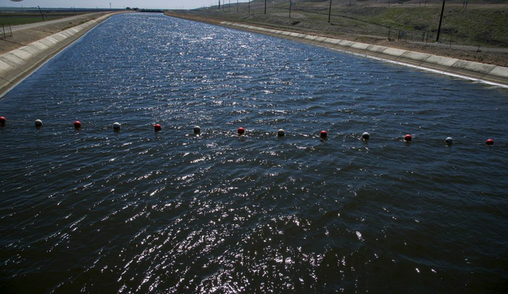
The line of floaty balls means you are approaching one of these:
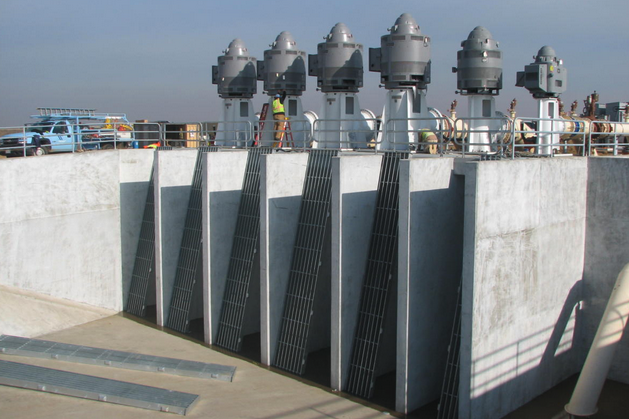
Even though swimmin’ in the canals is illegal, the operators dont want to turn a bunch of kids into fish food, so they put up the balls.
Note
Despite the obvious Darwinian advantage of grinding up kids - dead meat does not pay taxes; support old folks; nor serve as a supply of harvestable kidneys. Hence we try to save them.
In these applications the resistance to flow is balanced by a driving force provided by gravity.
Resistance is a consequence of cross-section shape, soil, vegetation, materials (in engineered channels). In pipelines the resistance was understood by laboratory experimenters by the 1930’s. In open channels interest started later
Note
Obviously people have built working open channels much earlier, but techniques of design were empirical passed down by secret societies who wore wizard hats and flew on brooms!
Consider a generic force balance diagram over a short section of channel, \(\Delta L\) long:
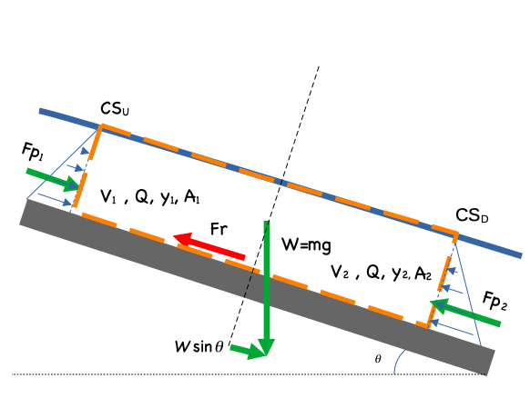
Now insert the Energy Grade Line (EGL)
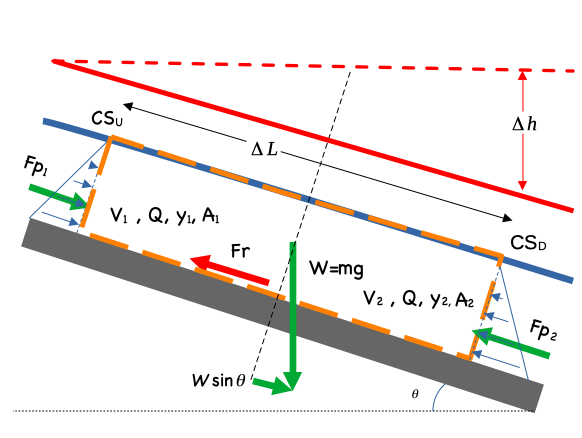
In the case of uniform flow the flow depths are the same at each end of the section, the section length is such that the end areas are about the same, hence the upstream and downstream pressure force are the same, and the remaining forces are gravity (drive) and friction:
Note
In the above expression \(Fr\) is the frictional shear force, not the Froude number. Use the principle of algebraic substitution, and give friction any name you want in the drawing, except Elroy
If friction is stipulated to be generated only by the shear force induced at the solid-liquid interface (and not at the free surface) then the expression becomes
where \(P\) is the wetted perimeter
Divide by \(P \Delta L\) to obtain
observe the hydraulic radius, \(R_h = \frac{A}{P}\) appears
The boundary shear stress is the factor that expresses the resistance properties of the fluid (wasser) and the solid material (conduit wall). A usual simplification is to observe that the angle is usuall pretty small so that
In pipe flow (CE 3305) the shear stress was something like
Or more usefully (in that context)
And one either looked up a value in the Moody chart or applied Swammee-Jain equations to find \(f\) for various Reynolds numbers and material relative roughness.
Returning to our situation we have
So now we need some way to express \(f\).
Manning-Chezy#
Chezy Correlation
and the value \(C\) is the Chezy coefficient.
Manning Correlation
Manning several years before his football career developed a similar correlation but observed that the hydraulic radius varied by the 2/3 power as
There is meaningful theory to relate surface roughness to the “\(C\)” values
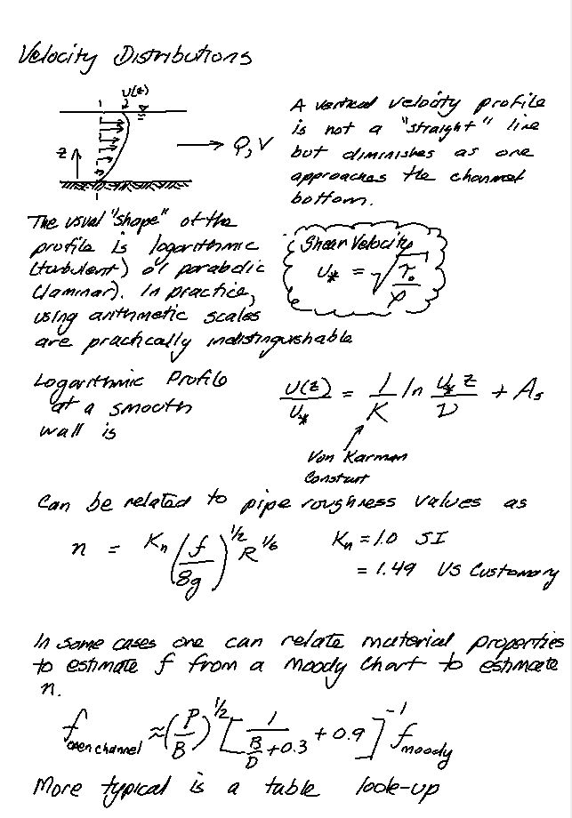
From here one can relate the friction factor back to Manning’s n or the Chezy coefficient:
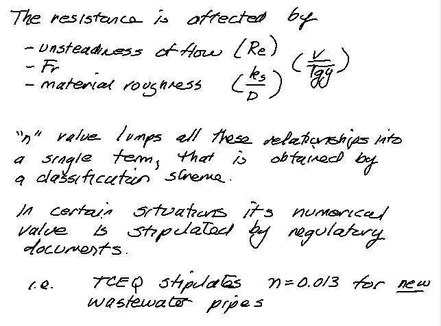
The usual way to specify Manning’s n is by a table lookup such as http://54.243.252.9/toolbox/Databases/ManningN/ManningsN.html
or tables similar to those in our book
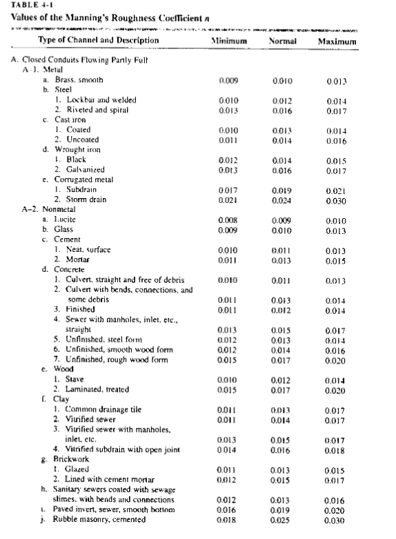
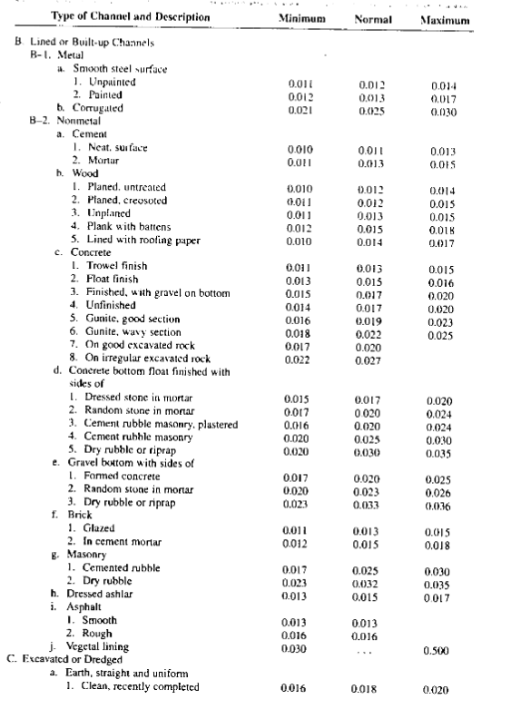
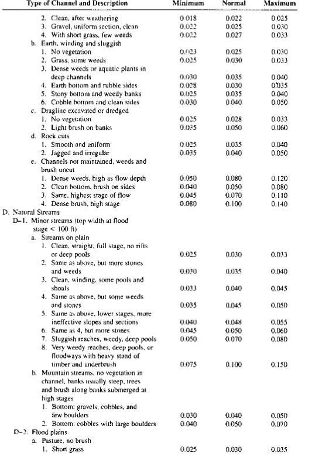
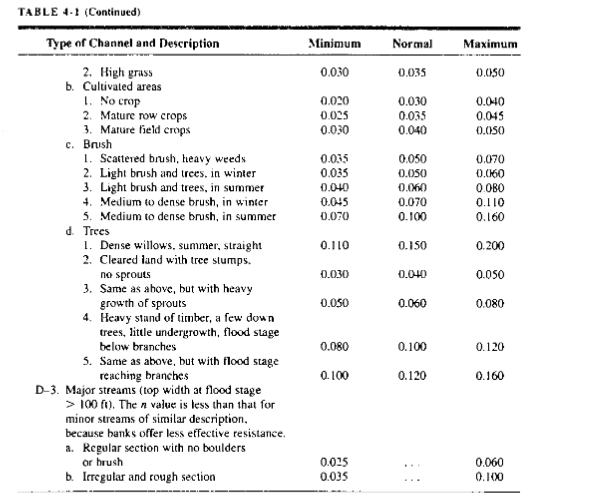
or by comparison with photographs of channels
Barnes, 1967 (A classic reference document) https://pubs.usgs.gov/wsp/wsp_1849/pdf/wsp_1849.pdf
and many others.
Composite Sections#
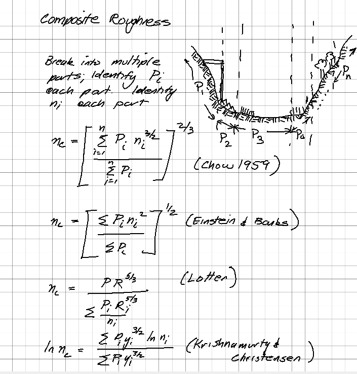
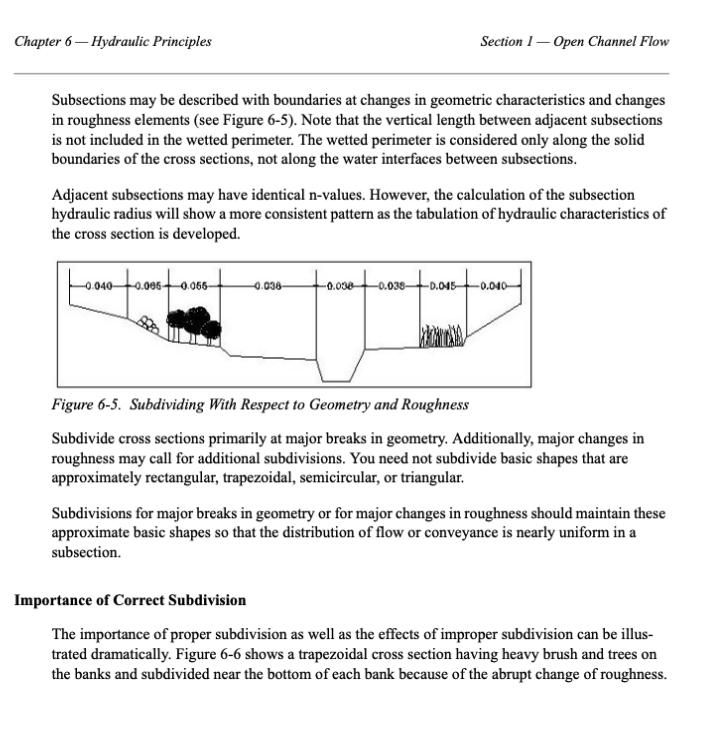
Normal Flow Calculations
where \(S_0\) is the bed slope, \(S_f\) is the slope of the energy grade line (called the friction slope).
Typical cases:
Know \(y_0\) or \(y_n\), shape, \(S_0\),\(n\), compute \(Q\) directly.
Know \(y_0\), shape, \(Q\),\(n\), compute \(S_0\) directly.
Know shape, \(Q\),\(n\),\(S_0\) compute \(y_0\) iteratively.
Example 4.1#
A trapezoidal channel has a bottom width of 20 feets with 2:1 side slopes, bed slope is 0.001. Design discharge is 1000 cubic feets persecond. Manning’s n is 0.027. Find normal depth.
# prototype functions
def Qman(Kn,n,A,R,S):
Qman=(Kn/n)*(A)*(R**(2/3))*(S**(1/2))
return(Qman)
def TopTrap(y,m,b):
TopTrap=b+2*m*y
return(TopTrap)
def AreaTrap(y,m,b):
AreaTrap=y*(b+m*y)
return(AreaTrap)
def PerTrap(y,m,b):
PerTrap=b + (y**2+(y*m)**2)**(1/2) + (y**2+(y*m)**2)**(1/2)
return(PerTrap)
Qdesign = 1000
Slope = 0.001
Mann = 0.027
SideSlope = 2
Bottom = 20
# Using Newton's Method
from scipy.optimize import newton
def f(y):
global Qdesign,Slope,Mann,SideSlope,Bottom #set as global variables so can access from outside the function. DANGER WILLY!
area = AreaTrap(y,SideSlope,Bottom)
perimeter = PerTrap(y,SideSlope,Bottom)
radius = area/perimeter
Qout = Qman(1.49,Mann,area,radius,Slope)
f = Qout-Qdesign
return(f)
yguess = 10.507
#print(newton(f, yguess))
ysolve = newton(f, yguess)
area = AreaTrap(ysolve,SideSlope,Bottom)
perimeter = PerTrap(ysolve,SideSlope,Bottom)
radius = area/perimeter
Qout = Qman(1.49,Mann,area,radius,Slope)
print("y_n is",round(ysolve,3)," feet \nComputed Discharge is ",round(Qout,3)," CFS")
print("Flow Balance Error is ",round(Qout - Qdesign,6))
y_n is 6.497 feet
Computed Discharge is 1000.0 CFS
Flow Balance Error is 0.0
Example 4-2#
Parabolic drainage channel has maximum topwodth of 30 ft. Design flow is 80 CFS. Bed slope is 0.005. Manning’s n is 0.040. Find normal depth in the channel.
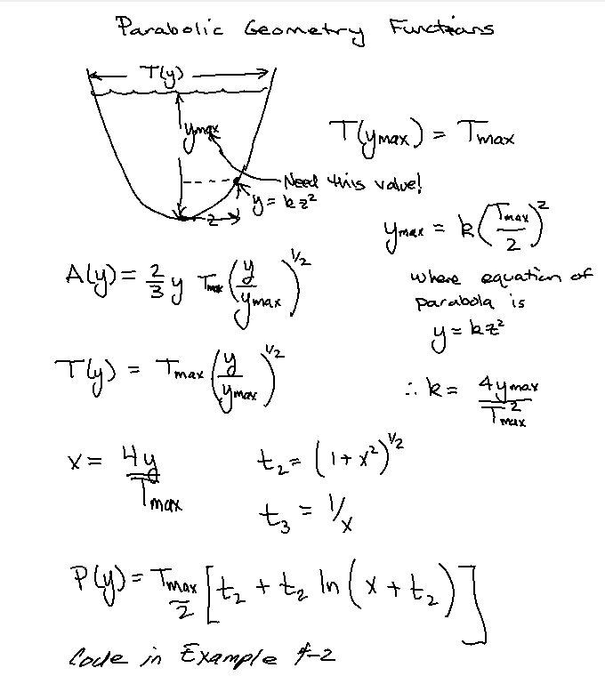
# simply reuse code
def Qman(Kn,n,A,R,S):
Qman=(Kn/n)*(A)*(R**(2/3))*(S**(1/2))
return(Qman)
def TopPara(y,h,b):
TopPara=b*(y/h)**(1/2)
return(TopPara)
def AreaPara(y,h,b):
AreaPara=(2/3)*y*(b*(y/h)**(1/2))
return(AreaPara)
def PerPara(y,h,b):
import math
x=4*y/b
t1=1+x**2
t2=t1**(1/2)
t3=1/x
PerPara=(b/2)*(t2 + t3*math.log(x+t2))
return(PerPara)
Qdesign = 80
Slope = 0.005
Mann = 0.040
Bmax = 30
Ymax = 1.55 #<<< need to specify this value, not provided in the example, by a little trial-and-error to macth book solution
# Using Newton's Method
from scipy.optimize import newton
def f(y):
global Qdesign,Slope,Mann,Ymax,Bmax #set as global variables so can access from outside the function. DANGER WILLY!
area = AreaPara(y,Ymax,Bmax)
perimeter = PerPara(y,Ymax,Bmax)
radius = area/perimeter
Qout = Qman(1.49,Mann,area,radius,Slope)
f = Qout-Qdesign
return(f)
yguess = Ymax
#print(newton(f, yguess))
ysolve = newton(f, yguess)
area = AreaPara(ysolve,Ymax,Bmax)
perimeter = PerPara(ysolve,Ymax,Bmax)
radius = area/perimeter
Qout = Qman(1.49,Mann,area,radius,Slope)
print("y_n is",round(ysolve,5)," feet \nComputed Discharge is ",round(Qout,3)," CFS")
print("Flow Balance Error is ",round(Qout - Qdesign,4))
y_n is 1.52677 feet
Computed Discharge is 80.0 CFS
Flow Balance Error is 0.0